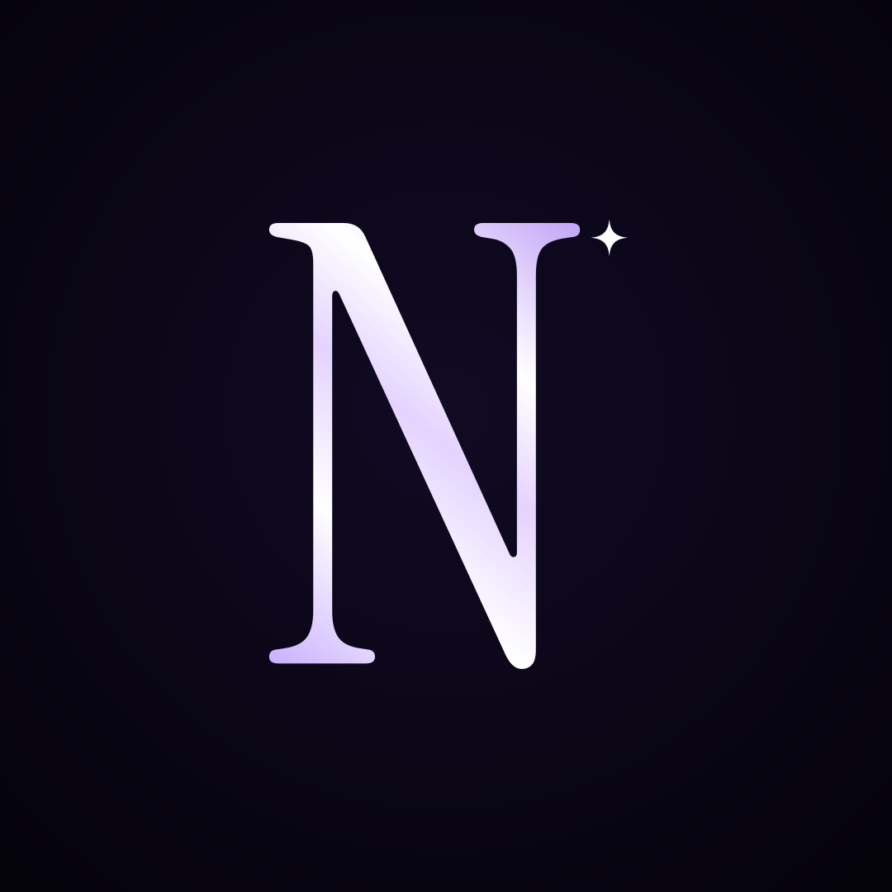
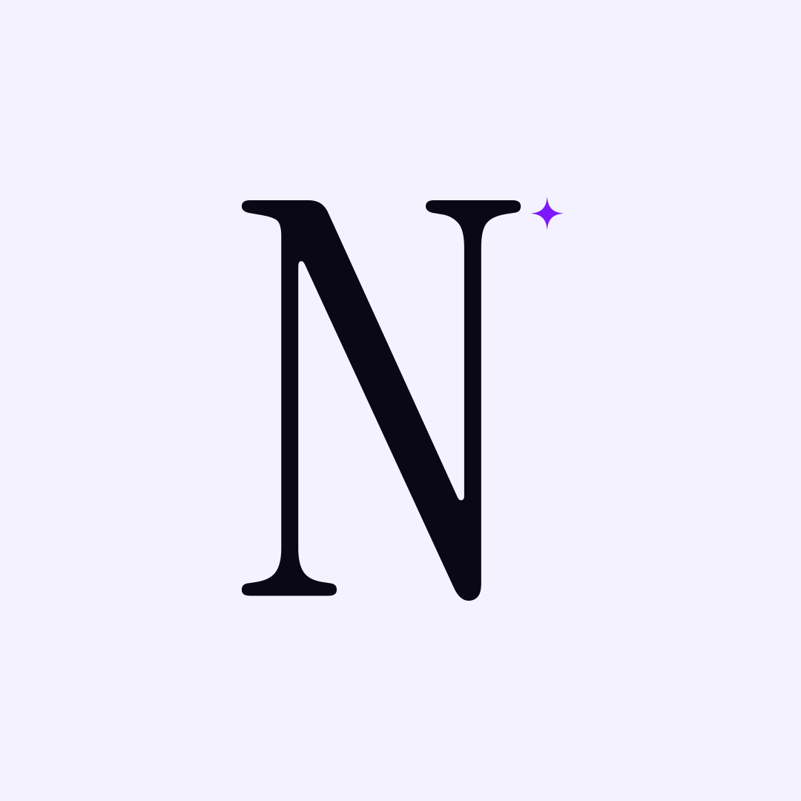
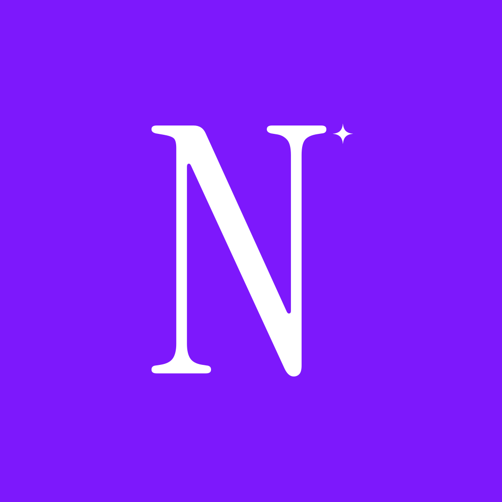
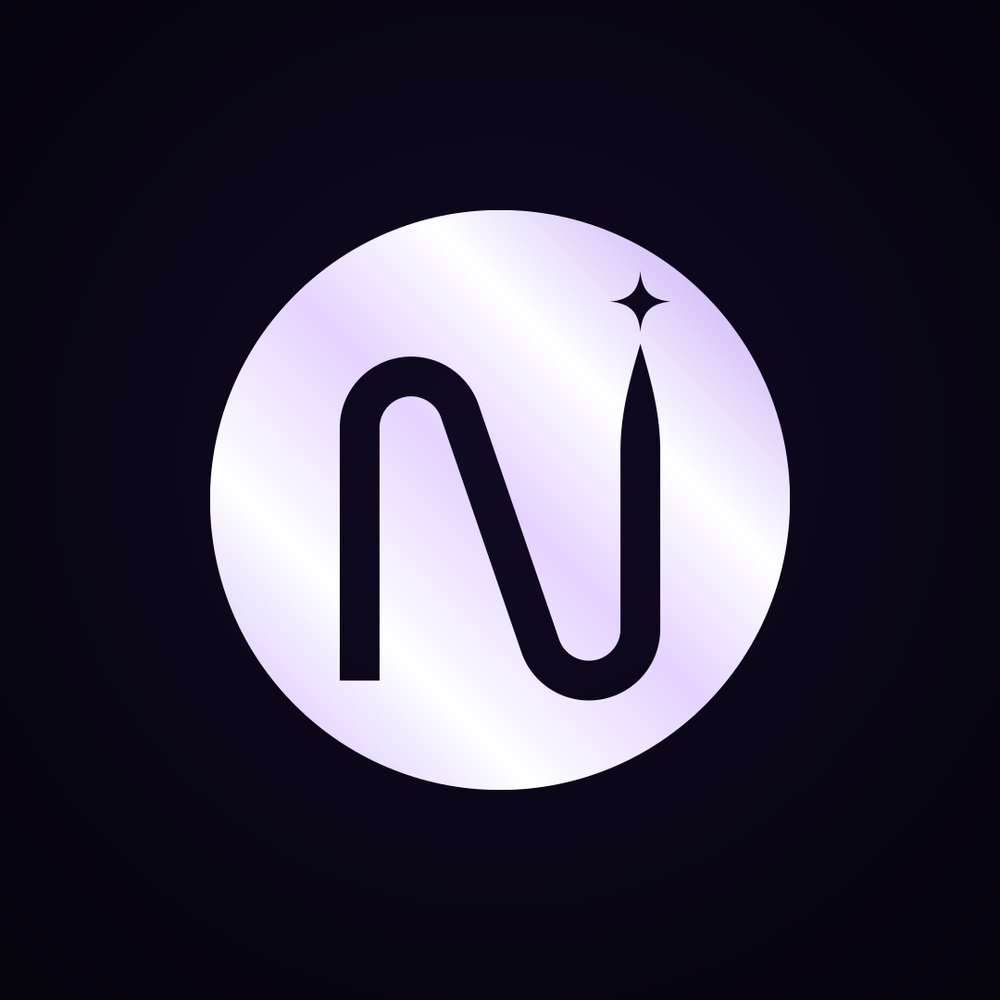
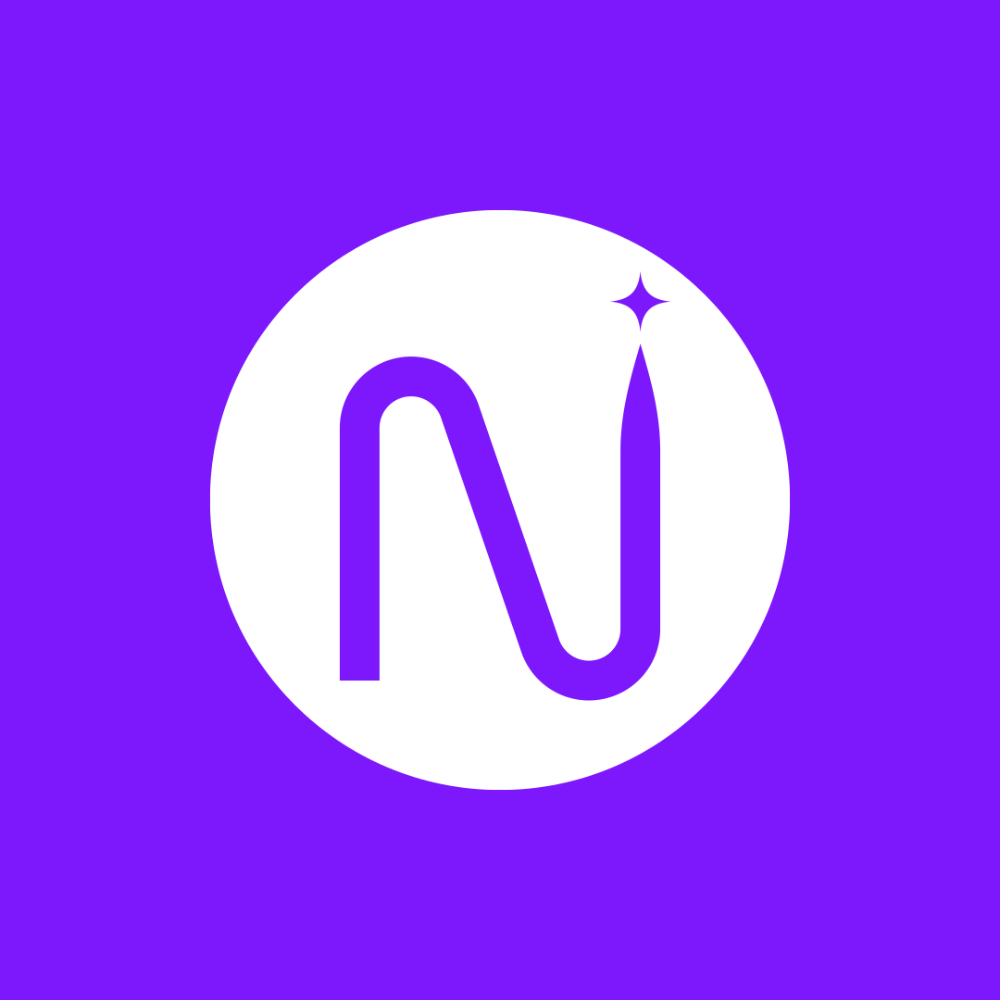
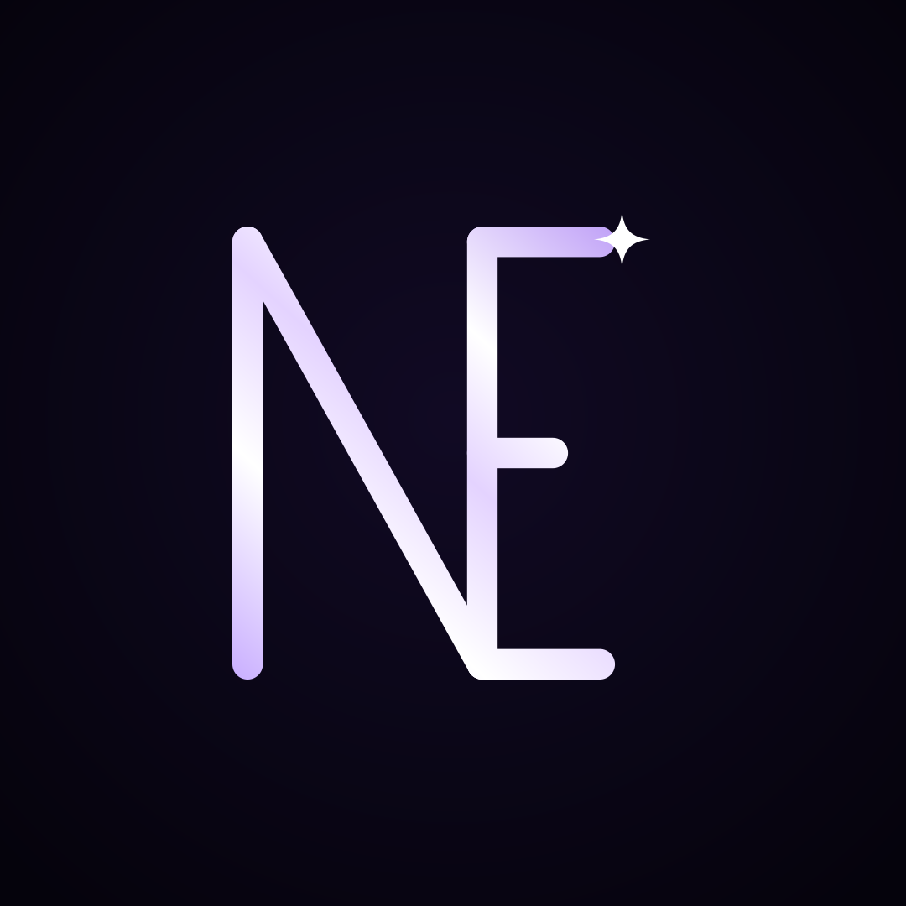
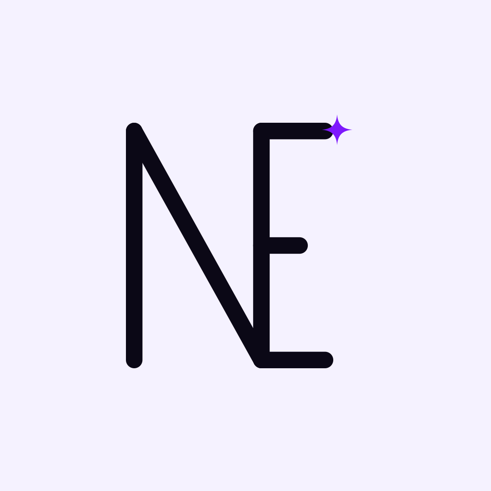
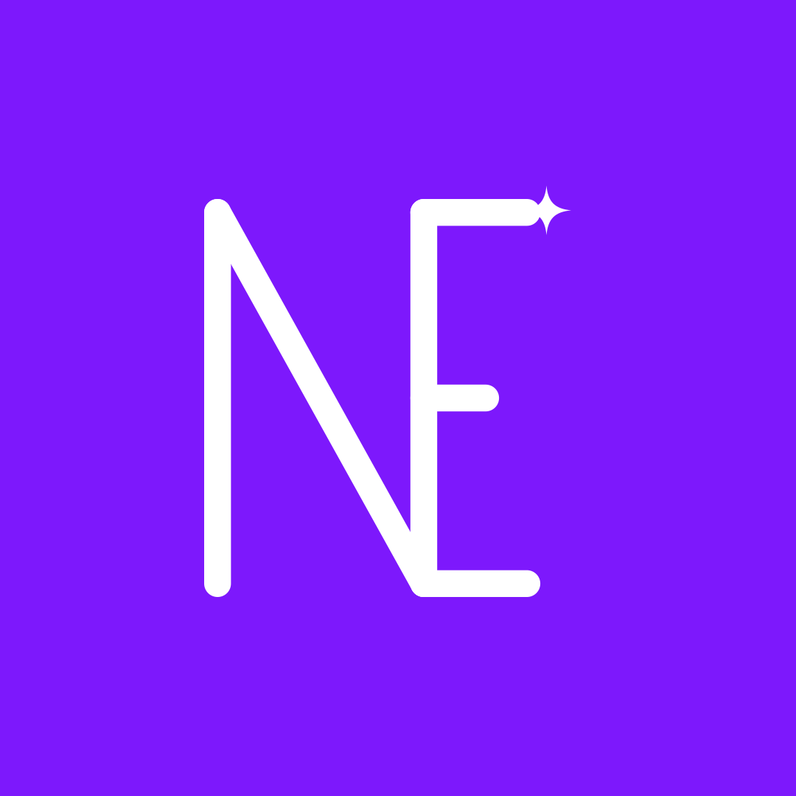

@nxtlvlledits · new lettermarks (2 of 2)
New directions, symbol only. Each one on rich black (the profile picture), then on ivory and on violet, to show it holds up anywhere.

X
A tall, high-contrast serif capital N, like a fashion-magazine masthead, with the star at its corner.



Y
A solid disc with the N and the star cut out of it, like a coin or a wax seal. The boldest at small sizes.


Z
N and E sharing one upright, drawn in one even line: nxtlvl edits in two letters.

